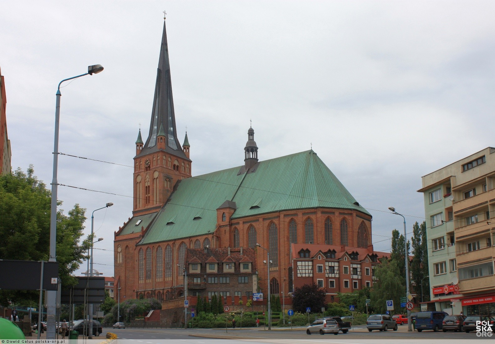

Szczecin, stolica województwa zachodniopomorskiego, to miasto bogate w historię, kulturę i niezliczone atrakcje, które przyciągają zarówno turystów z kraju, jak i zagranicy. Położone nad rzeką Odrą, Szczecin jest znane nie tylko ze swojego pięknego położenia, ale także z fascynujących miejsc wartych odwiedzenia.
Nie sposób opisać wszystkich atrakcji, które Szczecin ma do zaoferowania, ale niektóre z nich stanowią prawdziwe perełki regionu. Od zamków i pałaców, po muzea, parki i wydarzenia kulturalne, Szczecin przyciąga każdego, kto pragnie odkrywać nowe miejsca.
Czy jesteś miłośnikiem historii i architektury? Zamek Książąt Pomorskich z pewnością Cię zafascynuje. A może jesteś pasjonatem sztuki? Muzeum Narodowe w Szczecinie posiada bogate zbiory, które zaspokoją Twoje ciekawości. Wały Chrobrego, z charakterystycznym fontannami i rzeźbami, to ulubione miejsce spacerów mieszkańców i turystów.
Szczecin to również miasto festiwali, koncertów i wydarzeń kulturalnych. Od Festiwalu Szczecińskiego Piosenki po Międzynarodowy Festiwal Filmowy, miasto oferuje rozrywkę na najwyższym poziomie
Zamek Książąt Pomorskich
Średniowieczny zamek w centrum miasta.
Muzeum Narodowe w Szczecinie
Zbiory sztuki, historii i kultury regionu.
Wały Chrobrego
Nabrzeże w centrum Szczecina przy odrze.
Filharmonia
Średniowieczny zamek w centrum miasta.
Bazylika Archikatedralna pw. św. Jakuba Apostoła
Główny kościół rzymskokatolicki Szczecina
Jezioro Szmaragdowe

Sztuczne jezioro położone na osiedlu Szczecina – Zdrojach, na obszarze Parku Krajobrazowego „Puszcza Bukowa”.
Morskie Centrum Nauki
Miejsce poświęcone zagadnieniom związanym z morzem i oceanem
Brama Portowaa
jedna z bram miejskich Szczecina, zbudowana w stylu barokowym
Miejsce
Atrakcja
Stare Miasto
Atrakcja
Opis
Zamek Książąt Pomorskich
Średniowieczny zamek w centrum miasta.
Muzeum Narodowe w Szczecinie
Zbiory sztuki, historii i kultury regionu.
Wały Chrobrego
Nabrzeże w centrum Szczecina przy odrze
Bazylika Archikatedralna pw. św. Jakuba Apostoła
Główny kościół Szzcecina
Nowe Miasto
Atrakcja
Opis
Brama Portowa
jedna z bram miejskich Szczecina, zbudowana w stylu barokowym